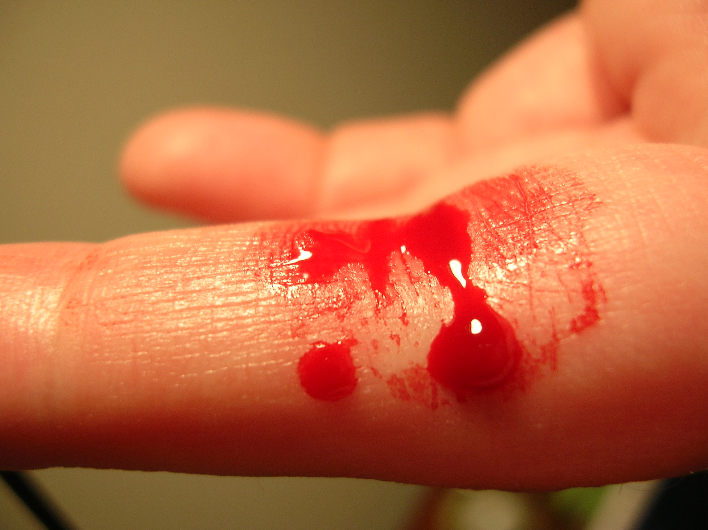
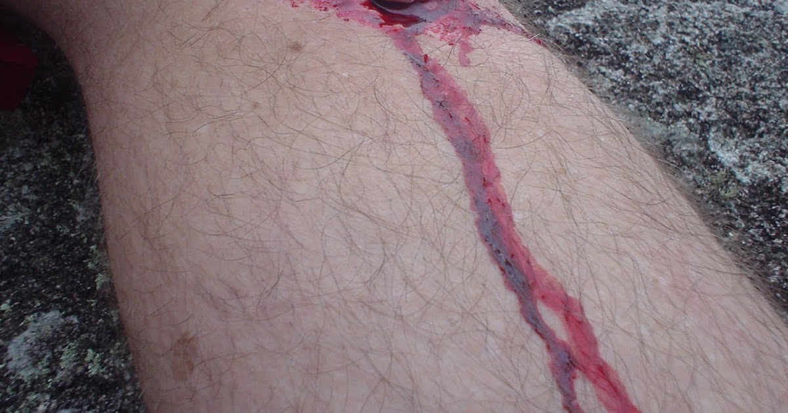
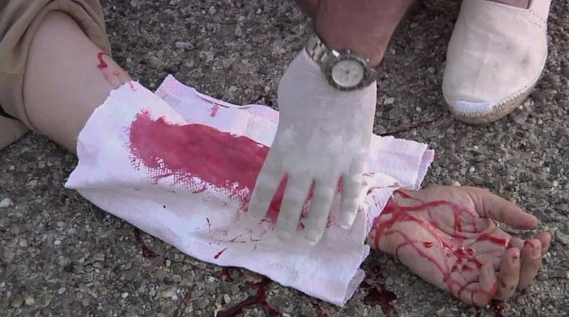

Una hemorragia es la salida de sangre desde el aparato circulatorio, provocada por la ruptura de vasos sanguíneos como venas, arterias o capilares. Puede consistir en un simple sangrado de poca cantidad como el caso de una pequeña herida en la piel o de una gran pérdida de sangre que amenace la vida.
Clasificacion de las Hemorragias
Las Hemorragias pueden clasificarse de la siguiente manera:
Se presenta cuando la pérdida de sangre es abundante y previamente ha existido un traumatismo (golpe) en la cabeza, el origen de la hemorragia suele ser la fractura de la base del cráneo.
Las hemorragias que salen por la nariz se denominan epistaxis. El origen de estas hemorragias es diverso, pueden ser producidas por un golpe, por un desgaste de la mucosa nasal o como consecuencia de una patología en la que la hemorragia sería un signo, como por ejemplo en el caso de la hipertensión arterial (HTA).
EL sangrado por la boca pueden ser producidas a causa de mordidas ya sea en el interior de la mejilla, las encias, labios,el caso mas grave es la lengua ya que si se muerde fuertemente puede ser peligroso, otro caso extremo seria que se presenten en forma de vomito, que pueden tener su origen en el pulmon o estomago mediante tos o nauseas.
Atendiendo al aspecto en que se presentan las heces, podemos determinar el origen de estas hemorragias. Son de origen digestivo cuando las heces son de color negro (melenas) y de origen rectal cuando las heces se presentan con sangre normal (rectorragia).
La situación más común que se presenta en esta hemorragia es cuando una mujer aborta en un descuido ya sea por golpe, caída o alzar cosas pesadas que afectan en el embarazo en las primeras semanas.

La hemorragia capilar o superficial afecta solo lo vasos sanguíneos superficiales sobre la piel, se controlan fácilmente debido a que el flujo es lento es una hemorragia leve.

Como su nombre lo indica esta hemorragia proviene de las venas, llevan sangre de los órganos al corazón fluye continuamente pero cuando la hemorragia es venosa sale sangre color rojo oscura puede ser de escasa o abundante cantidad, este tipo de hemorragia es moderada.

Se afirma que las arterias llevan la sangre desde el corazón al resto del cuerpo, fluyen al bombeo del corazón, si se presenta este caso de hemorragia puede provocar la muerte en 1 minuto, ya que sale la sangre con presión y es de color rojo brillante, este tipo de hemorragia es grave.